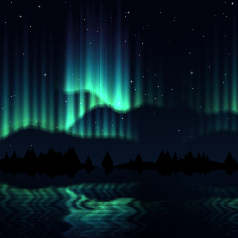
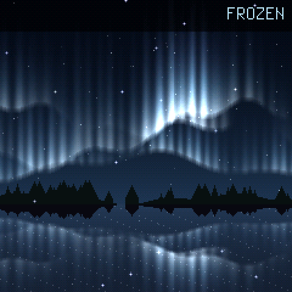
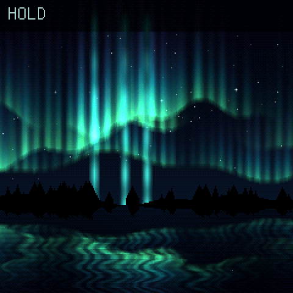
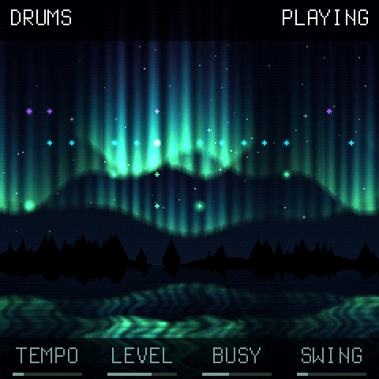

Play it in your browser, no FM-1 needed. An ambient machine that plays by itself and never quite repeats: pads move through chord progressions and keep returning to a motif, bells play phrases of it, and the piece drifts through sections and keys, over a drone and wind in a very large reverb. Every button opens a page of four knobs, and each page puts its own light into the aurora. Press a button on the panel to see what it does.
Green labels are what AURORA does with each control. The same button again goes back to the sky.

KNOB 1 to KNOB 4 always turn the four controls of the page that is open; the screen shows their names along the bottom and a bar for each. Each knob runs 0 to 127.
| Control | What it does |
|---|---|
| ALGORITHM | The scene: its sound, its sky's colours, its scale and root, and where its knobs start. Turning it resets the knobs to the scene's. |
| SELECT | The scale: Lydian, major, major pentatonic, suspended, Dorian, minor, minor pentatonic, Phrygian, Hirajoshi, whole tone, fifths. |
| PRESETS | The root note, a semitone at a time. The drone slides to the new root. |
| OCT− / OCT+ | The register, one octave down or up. Both together: back to the middle. |
| SCL | Tap: the keys' mode (PADS, HOLD, BELLS, CHOIR). Hold it and press a key: that key becomes the root. |
| PLAY | The machine plays or waits. Waiting, the aurora sinks low; the keys still play. |
| REC | Freeze: the reverb holds what is in it, for ever, and the sky turns to ice. |
| ARP | The drums' page: TEMPO, TONE, BUSY, SWING. ARP again on that page: a new pattern, from the next downbeat. MIX 2's DRUMS starts and stops them. Its light blinks the beat while they play. |
| SAVE | Tap: keeps everything (scene, scale, root, octave, key mode, all the knobs) as the power-on state. Hold it and press F, G, A or B (the first four white keys): keeps that as moment 1 to 4. Writing the flash stops the sound for a moment. |
| HOME | The sky; press it again for MIX 1, a third time for MIX 2, once more back to the sky. Hold it and press F, G, A or B: back to that moment (EMPTY if none is kept there). In the browser: Alt+1–4 brings a moment back, Alt+Shift+1–4 keeps one. |
| FX | The effects page; press it again for the NIGHT page (its light and HOME's together); a third time, back to the sky. |
| MASTER | The volume. |
| MIDI in | Notes play the pads, as they come (not snapped to the scale). |
| MIDI out | Everything AURORA plays goes out over USB, so it can play your other synths: pads on channel 1, bells 2, the drone's root 3, the drums' mallets 4, the choir 5, the drums 10 (36 heartbeat, 37 rim, 70 shaker, 82 open shaker). Notes that came in over MIDI are not sent back. |
The 27 keys run from F3 to G5, and every note is snapped to the scale. Tap SCL to move between four modes; the mode shows at the top of the screen, and SCL's light is on in any mode but PADS.
| Mode | A key | SCL light |
|---|---|---|
| PADS | Plays a pad note for as long as it is held, with a third of the page's ATTACK and the full RELEASE. | Off |
| HOLD | Latches its note: it rings until you press that key again. Held notes stand as pillars of light, and their keys stay lit. Leaving HOLD lets them all go. | On |
| BELLS | Strikes a bell an octave up. The star nearest its note flares and a shooting star crosses. | On |
| CHOIR | Sings the note, an octave down, for as long as the key is held: three real singers to a note, a little apart, each with a vibrato, men's voices below middle C and women's above, the vowel drifting through A E I O U, deep in the reverb. Up to four notes. A shaft of pale light comes down from the top of the sky where each note is. | On |
These change the sky on every page, HOME included.

The reverb holds for ever. The curtains slow to a stop and turn pale blue, the water goes still under a sheet of ice with faint cracks, and sparks of frost come and go. FROZEN shows at the top right.

Each latched note becomes a pillar of light rising from the horizon at its pitch, twinkling as it goes up, while it rings.

Each heartbeat makes the aurora pulse and reach lower, each rim flares a star (now and then a shooting star), the shaker makes stars twinkle. Open ARP to see the pattern itself.
| Scene | Key | Sound | Sky |
|---|
The same firmware runs in a browser on an emulated panel: open it here. Drag the knobs, press the buttons, or use the computer keyboard:
| Keys | Does |
|---|---|
| Z–/, S–', Q–O | The 27 keys |
| 1–8 | The pages: sky, effects, pad shape, pad tone, motion, drone, machine, drums |
| Tab | SCL: the keys' mode |
| ← → · ↑ ↓ | Scene · scale |
| Space · Shift · Enter | Play · freeze · the drums' page |
Get aurora-X.Y.fwsc from the repository's Releases (GitHub builds and signs it from source, with the FM-1 Firmware Hub's shared workflow on GR!MM's build system and its chip checks). With Python 3, pip install mido python-rtmidi and a checkout of GR!MM:
python3 tools/fm1_install.py aurora-X.Y.fwscAURORA keeps GR!MM's update and recovery code, so any FM-1 firmware can be installed over it again. Hold OCT− while switching on for the USB rescue, and the Firmware Hub's Rescue page brings back a stuck FM-1. Its package identity is FM-1_9441126, its own. SAVE writes the settings sector GR!MM also uses: GR!MM's own power-on state starts fresh after it.
Unofficial firmware, not made or endorsed by M-VAVE: install at your own risk.